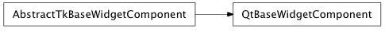
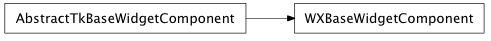

Bases: enaml.core.base_component.BaseComponent
A BaseComponent subclass which adds support for a gui toolkit specific backend object. This class represents the most basic component in Enaml that drives a gui toolkit object. The gui toolkit object at this level is not necessarily a widget which can paint on the screen.
A read-only property that returns the toolkit specific widget being managed by the abstract widget.
The toolkit specific object that implements the behavior of this component and manages the gui toolkit object. Subclasses should redefine this trait to specify the specialized type of abstract_obj that is accepted.
Overridden parent class destruction method method that adds additional logic to destroy the underlying toolkit widget.
The destruction happens in dual pass top-down, then bottom-up. On the top-down pass, the traits listeners for the abstract obj are unhooked so that no events get fired during destruction. On the bottom up pass, the abstract obj is destroyed and its ref set to None.
alias of __NoInterface__

Bases: enaml.components.base_widget_component.AbstractTkBaseWidgetComponent
A Qt4 implementation of BaseWidgetComponent.
The Qt widget/object created by the component
A property which gets a sets a reference (stored weakly) to the shell object
Creates the underlying Qt object. As necessary, subclasses should reimplement this method to create different types of widgets.

Bases: enaml.components.base_widget_component.AbstractTkBaseWidgetComponent
A Wx implementation of BaseWidgetComponent.
The Wx widget created by the component.
A property which gets a sets a reference (stored weakly) to the shell object
Creates the underlying Wx object. As necessary, subclasses should reimplement this method to create different types of widgets.